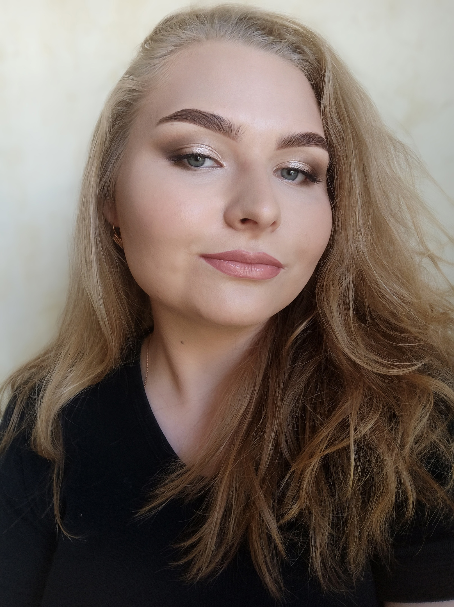

Нознова
Светлана
Описание
Светлана родилась 29 августа 1999 года. Живет и учится в городе Саров. Любит проводить время с друзьями, собирать пазлы и кататься на велосипеде. На данный момент является старостой группы, и вот, что она думает об этом:
Группа не плохая, в целом. Многие ребята пришли из других профессий, это здорово.
Из сильных своих сторон она отмечает: упрямство, лояльность, быстрое реагирование в каких-либо ситуациях, а также свой подход во всем.
Из стремлений у нее:
- Закончить институт, как минимум на хорошо
- Продвинуться в карьере
- "Замахнуться" на магистратуру